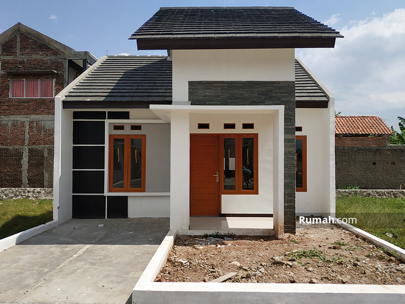
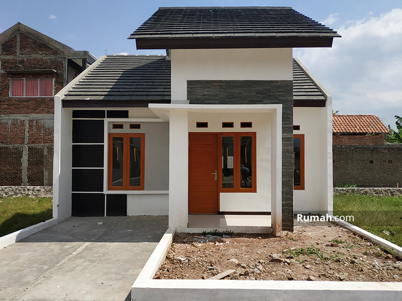

di 10 tahun yang akan datang saya ingin setidaknya menyelesaikan 2 dari mimpi-mimpi saya, dan di umur 25 tahun saya ingin menikah dan di umur 28 saya ingin memiliki anak, di sebelum umur 25 saya ingin memiliki rumah dan penghasilan tetap sendiri. dan setidaknya di umur 30 nanti saya ingin menghajikan ayah dan ibu saya, aminnn.